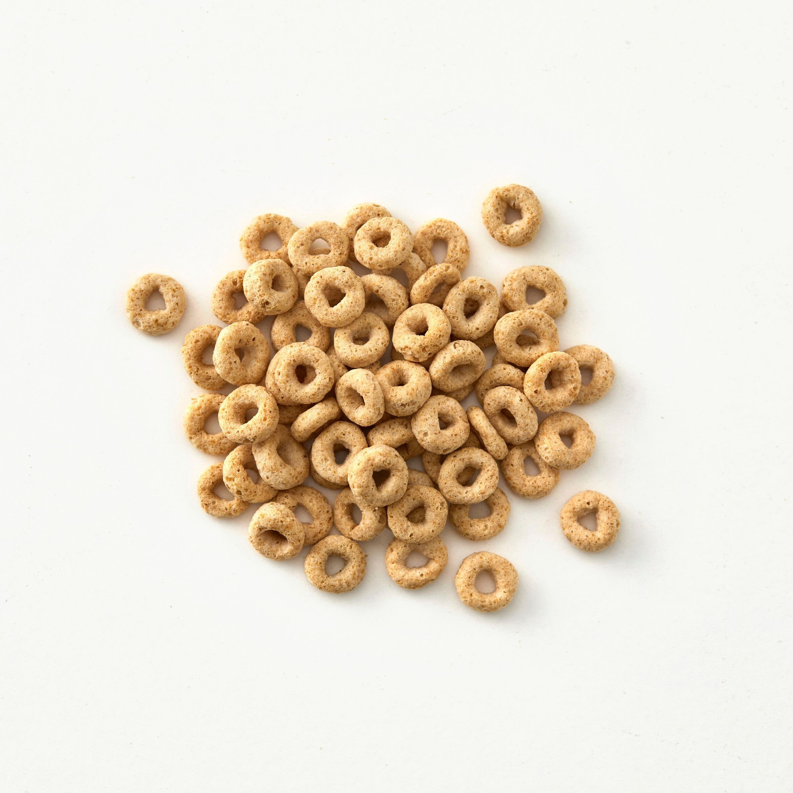

Cheerio Dusted Cheerios

Description
This recipe was a childhood favorite of mine. There's just something about cheerios that have been covered in the dust of their own kind that warms the heart.
Some cheerios are sacrificed for the purpose of the dusting but they are not wasted. These cheerios with the squared outer ring can be enjoyed as a pre-completion snack! Yum!
Ingredients
- Approximately eight cheerios for dusting purposes
- A bowl of cheerios to be dusted
- That's it!
Steps
- Select two cheerios from the dusting cheerios pile
- Holding the holes on either side with your thumbs and pointer fingers, grind the edges of the two dusting cheerios together over the bowled cheerios until the edges are squared off (be careful not to go all the way through the cheerios)
- Continue until all four sides of the cheerios are squared off
- You may now eat the square cheerios (I know you've been waiting for this moment)
- Repeat the process for the remaining dusting cheerios or until your bliwed cheerios are sufficiently dusted
- Enjoy your dusted, bowled cheerios!